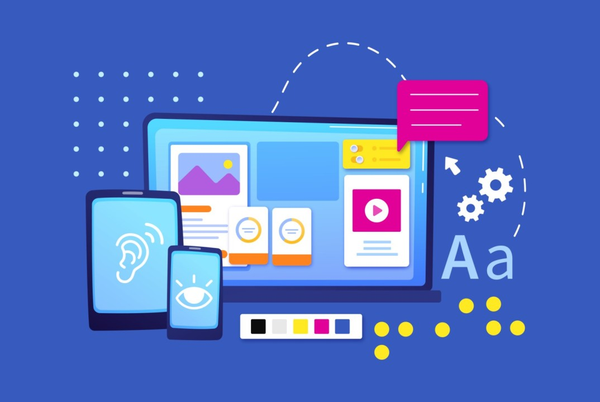

Welcome to my Blog Page!
Discover amazing content and updates.
Latest Posts

Responsive web design has revolutionized the way we build
websites. It allows us to create web pages that look great and
function well on any device, from desktops to tablets to
smartphones. Discover the key principles of responsive design
and how to apply them to your own projects.